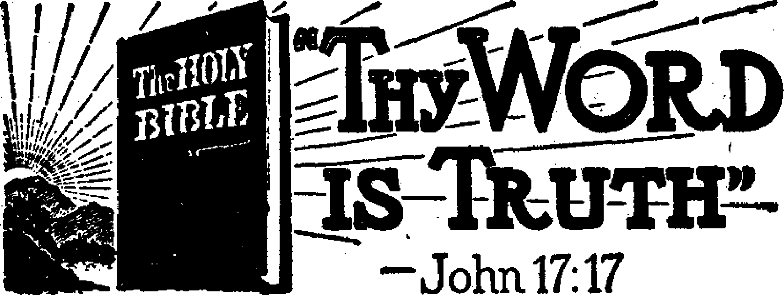
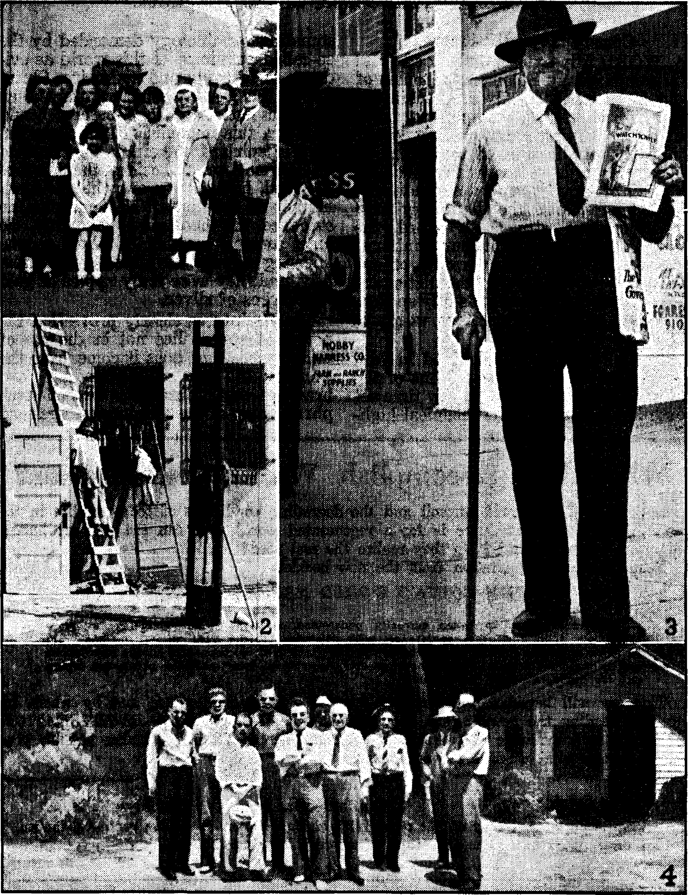

■ ■ s
Misediicated Germany
The Stripping of Europe
The “Herren volk” Insanity
There Are No Moral Problems Always New Cruelties to Jews Murder Etiquette Disregarded
Is There Money in Religion?
The ‘Limbo-Purgatory7 Entrance
Vatican Is the Center
Mr. Crowley Explains, in Part Easy Way to Make a Thousand The Bingo Robberies
Learning Great Lessons in Michigan
The Llama and the Camel
“Thy Word Is Truth”
Faithful Amidst Hypocrisy
“The Mother of God”
Work for the Police
Little Jael in Sand Cave Valley
Fighter for a Free Earth
“The Sword of the Spirit” Strikes!
The Pope’s Neutrality
The Ringing of Doorbells
“Numbered with the Transgressors”
Presenting “This Gospel of the Kingdo Consult Your Dictionary!
Theophilus of Antioch
A Pretty Good Recommendation
3
4
5
5
6
7
9
10
10
11
12
12
13
15
16
18
19
20
21
23
24
25
26
28
31
31
Published every other Wednesday by WATCHTOWER BIBLE AND TRACT SOCIETY, INC. 117 Adams St., Brooklyn 1, N. Y.f U. S. A.
OFFICERS
President Secretary Editor
$1 a
$1.25 to
Clayton
N. H. Knorr Van Amburgh J. Woodworth
Five Cents a Copy * year in the United States Canada and all other countries'
NOTICE TO SUBSCRIBERS
Remittances: For your own safety, remit by postal or express money order. When coin or currency is lost in the ordinary malls, there is no redress. Remittances - from countries other than those named below may be made to the Brooklyn office, but only by International postal money order.
Receipt of a new or renewal subscription will be acknowledged only when requested. Notice of Expiration is sent with the journal one month before subscription expires. Please renew promptly to avoid loss of copies. Send change of address direct to us rather than to the post office. Your request should reach us at least two weeks before the date of issue with which it is to take effect. Send your old as well as the new address. Copies will not be forwarded by the post office to your new address unless extra postage is provided by you.
Published also In Greek, Portuguese, Spanish, and Ukrainian. \
OFFICES FOR OTHER COUNTRIES
England 34 Craven Terrace, London, W. 2
Australia 7 Beresford Road, Strathfield, N. S. W.
South Africa 623 Boston House, Cape Town
Mexico Calzada de Melchor Ocampo 71, Mexico, D. F. Brazil Caixa Postal 1319, Rio de Janeiro
Argentina Calle Honduras 5646-48, Buenos Aires Entered as second-class matter at Brooklyn, N. Y., under the Act of March 3, 1879. <
No Substitutes Wanted of Needed
♦ Vicar means substitute. There isn’t much sense in accepting a substitute when you can have the real thing. So thought the metropolitan of Moscow Sergei, challenging the position of the old man in the Vatican as being the vicar of Christ. He said that although Jesus had left the earth in person, yet the Lord told His disciples He would be present with them nonetheless, "even unto the end , of the world.” So why a substitute or "vicar” ? The patriarch had something there. There are altogether too many substitutes for Christ, and they don’t do such a good job at substituting either, not if you look for at least a reasonable facsimile of the real thing. The various so-called ‘Vicars of Christ”, from the one who messed around with Constantine to the one who is now messing around with Hitler, haven’t done so well as substitutes of Christ, who would have nothing of the kingdoms of this world, and said so in no uncertain terms. Sergei is a sort of vicar himself, though he wouldn’t admit it. It makes interesting reading to hear these various vicars (there are others galore) rake one another over the coals and none too gently. The pope of Rome found great satisfaction in the plight of the Greek Orthodox- Church when his minion Mussolini, aided and abetted by Hitler the Roman Catholic, overran the country. As a vicar of parts the pope can’t stand anything that seems like competition, and the Greek patriarch, as he is called, together with the aggregation of Orthodox believers over which he presided, was a thorn in the side of the ‘one and only vicar’ in Rome. Pacelli thought he saw1 an end of this old rival of the papacy, and it must now come with considerable chagrin that the leader of the Russian Catholics pipes up and giyes the Roman pontiff something to sniff at.
And in His name shall the nations hope.”—Matthew 12:21, A
Volume XXV
Brooklyn, N, Y., Wednesday, May 24, 1944
Number 644
Miseducated Germany ■ p
THE most highly-educated people on miserable through renewed competition; nor the globe are the Germans, and, as , will he be permitted to have productive in
might be expected in a world ruled by the one who offered Jesus all the kingdoms of the world, their education is the most Satanic. Some recent official pronouncements follow:
In such a war there will be no longer any victors or vanquished, but only survivors and those whose names are stricken from the list of nations. The elite lies torn to pieces and poisoned on the battlefields. The survivors, a mob without a leader, demoralized, broken in body and mind by unspeakable horror and suffering and by terror without end, are at the complete mercy of the victor. (German army magazine. Deutsche Wehr, June 13, 1935)
War is the highest form of development in human life. It is the final and natural step in the history of human society. (German military magazine Review of the Military* Sciences, Militaerwissenschaftliche Rundschau, February, 1936)
The Government has decided to extend the German Order over the whole world. The world will have to reckon with German economy, with German soldiers and cannon. (Josef Goebbels, spokesman for Germany, speech of March 23, 1936)
It is obvious that a decisive conflict must result in unmitigated catastrophe for the vanquished. The victor will have rid himself of his rival once and for all. The only prize of victory will be the complete elimination of the vanquished from further competition, his destruction as an independent and important economic force. The enemy will not be allowed to produce any more, or to make our lives h ■ ■ ■* ■
MAY 24, 1944
dustries that might enable him to wage another possibly successful war against us. He must be destroyed and despoiled. (German army magazine Deutsche Wehr, May 16, 1933)
; We have always considered it a matter of course that the antiquated bourgeois attitude towards unmarried mothers and their children should be radically changed, because illegitimate children, the children &£ Love, more often than not are a valuable addition to our race, and therefore ought to be protected and encouraged by the nation out of the spirit of self-preservation. A girl who attempts to shirk this, her supreme duty, is just as much a deserter as a conscientious objector. (The Schutzstaffel organ The Black Guard, Das Schwarze Korps, January 4, 1940)
As to the rearmament of Germany, Hitler has only continued the rearmament that had been prepared by the Weimar Republic. I, myself, deserve great credit for this preparation. The great difficulty was that our military efforts had to be kept secret from the Allies. I, therefore, always had to appear polite and harmless. When Hitler came to power he no longer needed to concern himself with the quality of the German army but only with the quantity. The real reorganization was our work. (Dr. Karl Joseph Wirth, leader of the Catholic Center Party and chancellor of the Weimar Republic, in the Luzerner Tagblatt, August 9, 1937)
The foregoing are extracts from a little 128-page book, Know Your Enemy, containing about 150 similar selections. On the copy received at this office appeared the following notice:
I
3
This is not so much a book to read, though the time spent reading it would not be wasted, as it is a source of information to be kept at hand and used as required. I believe a ten-minute glance at it will convince you of that. Additional* copies may be secured without charge from the Society for the Prevention of World War III, 515 Madison Avenue, New York 22, N. Y.—Wm. L. Shirer. ri- '
. ■ " ■" ■ ■ . " '
. . . ■ i . ' ■ ■
Soldiers—Materiel—Slaves
A British writer in the Vancouver Daily Province says in effect that the German general is a first-class, highly trained professional; that the German soldier is very good at handling his technical equipment; has a very good eye for appraising the country in which he works and its military uses; has complete and absolute obedience; 4s weakened by over indulgence in sun-bathing; but is a very good fighting man, and it is a great mistake to think that the war will soon be over. Others think the same thing.
The American army intelligence service report shows that as it entered the fifth year of the war the German army had three times as many combat divisions as it did when it attacked Poland and that it had more planes; that Germany now has 300 well-trained divisions, each with approximately 600 machine guns and 300 heavier weapons; that the number of workers in Nazi-dominated territory has risen from 23,000,000 to 35,000,000 and that the Germans have raised and equipped armored, motorized and infantry divisions to replace each of the twenty lost at Stalingrad, and twice as many more.
The Germans have now admitted that in 1921 the heavy industry of the country spent much time right in Berlin, and right under the noses of the stupid Allied control commissions, designing new guns. It was almost twenty years before they awoke.
German planes are now shooting explosive machine-gun bullets, so designed
as to blow ten grains of powdered phosphorus into a wound. This prevents the wound from healing. Thousands of these bullets were found in Britain when a plane crashed there.
The foreign workers (slaves) in Germany are crowded in wooden huts at the rate of a floor area of 3 feet by . 4 feet for each worker; there are no washing facilities, no sanitary facilities, the walls and ceilings are covered with insects, the air is putrid, and the slaves literally wallow in filth. The machinery lacks the customary shields for moving parts; hence many lose arms, legs, and eyes.
The Stripping of Europe
For more than forty years German militarists have been planning to rule the entire earth and to strip other peoples of everything they possess. The plans, carefully formed, and announced in advance, have worked successfully. Without naming the countries they have overrun, it is sufficient to say that from all over Europe there has been flowing into Germany in the last five years everything from the occupied countries that was worth taking.
From country after country comes the .same tale, that the Germans have taken not only all the bank assets, but all the machinery, war materials, art objects, garden tools, door hinges, laboratory and scientific equipment, horses, cattle, sheep, pigs, fats, office furniture, park benches, steel scrap, oil reserves, copper, nickel, food, soap, shoes, clothing, paper, razor blades, tooth paste, laundry stocks, and hundreds of thousands of dwellings complete. Nothing like this was ever done before in the history of the human race.
In the first 28 months of the war, it was calculated, the loot had exceeded $36,000,000,000 and was growing by leaps and bounds. One can only faintly imagine what it is now. And the gangsters have also stripped the middle
■ 1
CONSOLATION 4 r .
classes of Germany itself. Thus, there used to be 24,000 daily papers, but since the time Hitler came to power 22,600 of them were closed up and put out of business. The fewer editors there are to watch, the safer it is for the gangsters. In a single period of two months 100,000 small retail shops were closed and the owners shoved into the factories, to spend the rest of their days in slavery.
The “Herrenvolk” Insanity
Inasmuch as God “hath made of one blood all nations of men” (Acts 17:26) “and the scripture cannot be broken” (John 10:35), it follows that for any race of humans to claim that it is a master race and destined to bring the whole human family into subjection to it is not only insanity, but blasphemy as well. The human family belongs to the Creator and to the Redeemer, and not to a demon-obsessed paper-hanger. But there are more Germans that believe they are the master race and that their leader is. inspired than there are Americans that believe there is only one man that can fill the office of president.
Virtually the whole human race is insane on the subject of sex, but in Germany unwed girls, sometimes called Germany’s state mothers, are given the best the country can provide. Not only are their children born at resorts which provide the most beautiful scenery within the Reich, but while the girls are at school they are assisted, encouraged and inspired to produce the storm troopers of the future. At a girls’ school in Frankfurt am Main Gregor Ziemer heard a teacher explain the meaning of the word “moral”. She said there is no such problem in Germany. Her exact words, as recorded in his book Education for Death, were:
All of *is women can now enjoy the rich /emotional and spiritual experience of having J a baby by a healthy young man without the ! restricting ties of the old-fashioned institution of marriage.
A mile and a half away there was a labor camp, and two evenings a week the girls #were permitted to go out without chaperones, and, says Mr. Ziemer:
Some of the girls were leaving the next day, going home to have their babies.
There Are No Moral Problems
Of course, if a country has no moral problems for the Bund Deutscher Mad-chens and harlotry is encouraged in the 550,000 girls that are each year initiated into their state-blessed organization, then all is well for the men; they may do what they will. To be sure, one shudder s a little at the story about the quiet little old bachelor Denke of Muensterburg who skillfully strangled some 30 persons, disemboweled them, salted the meat, ate it himself, fed it to his relatives, sold it as pork, separated the good teeth from the bad teeth, kept everything in jars and packages, and had a separate record of the name, date of birth, address and occupation of each victim. No doubt he enjoyed “the rich emotional and spiritual experience” of shutting off the wind of his fellow citizens, until one accidentally got away from him and squealed on him, but somehow one is glad rather than sorry that when he was caught he hung himself. Muensterburg is only about 25 miles from Breslau, Germany’s present capital, and Hitler should go down there and build a monument to this pure-blooded Aryan, Mr. Denke.
The Associated Press, in dispatches from Baltimore and New York, in February and March, 1944, tells of Nazi prisoners of war in United States prisoners-of-war camps in the southern states of this country who murdered five of their fellow prisoners because they were not sufficiently enthusiastic for “the rich emotional and spiritual” program of Pacelli and Hitler. One of the prisoners wrote to his sister on Long Island that he carries a scar four inches long on his neck where one of these birds tried in vain to sever his windpipe.
1,
Ziemer explains in his book Education for Death, already mentioned, (The Oxford University Press, 114 Fifth Avenue, New York city) that he heard a teacher explaining that the United States is peopled with criminals and renegades and has a government by rich Jews in which there is no real leadership.
The Pacelli-Hitler attitude toward real scholarship is shown by the fact that of the 2,000 students of Czech colleges and universities dragged out of bed on the night of November 17, 1939, and thrown into concentration camps of Buchenwald, Oranienburg, and Dachau, only 500 remained alive two years later. But old superstitions persist, and when a mother loses her son in the accursed cause of this infamous combine, she advertises, as one did in the Deutsche Allgemaine Zeitung of March 2, 1943, that her
Gefreiter Fabian Zoege von Manteufeel, aged 18, has been called into the glory of God. December 17, 1942, he failed to return from an attack in the Don bend.
One wonders, when Denke hung himself, if his mother was then living and if she thought that he also had “been called into the glory of God”.
Always New Cruelties to Jews
God’s Word contains no provision of blessings for Jews that it does not also contain for Gentiles, but the Nazis can always think of new cruelties for these people, with whom, to some extent, they seem to have confused Jehovah’s witnesses. In concentration camps the Jews must wear a red triangle topped by a yellow one; Jehovah’s witnesses wear a violet triangle; other classes of “criminals” wear pink, black, green or brown triangles.
Before the bombings of Berlin no Jew in that city might stroll leisurely upon its streets; he might not carry a cane; nor could he linger in front of a shop window, or halt to chat with a fellow Jew met en route, or use a public conveyance for any distance of- less than 4| miles, or keep canaries or other pets. And he must surrender, and without
Z ’
compensation, all typewriters, adding machines, electric heating pads, vacuum cleaners, binoculars, and cameras. And he had to show on his front door and on his visiting card thatheisaJ ew. Penalty for violation was death. When time bombs (probably “planted”-by the Nazis themselves) were found at a Berlin exhibition, 258 Jews were seized and machine-gunned and their families were deported.
As early as 1942 over 1,000,000 Jews had been murdered in Poland and adjacent countries, and slaughters were then proceeding at a rate of 1,000 a day. The New York Times, referring to these executions, explained that two civilian Germans were appointed to tear off the wedding rings and pull out the gold teeth from the bodies of the corpses. The California Jewish Voice, July 10,1942, stated that about this time Nazi policemen publicly drowned thirty Jewish children that had tried to escape from the ghetto at Warsaw and Nazi troops had machine-gunned 5,000 Jewish men,' women' and children at one time at Kerch, in the Crimea.
Horrible Jewish Massacres
The same paper, March 12,1943, gives the details of how the 58,000 Jews of Kolomyja, Galicia, Poland, were wiped out. During the first eleven months of Nazi occupancy of this city on the Rumanian border 50,000 had been machine-gunned in lots of up to 3,400 at one time. On September 7, 1942, a total of 6,300 were compelled to completely undress, hand their clothes and shoes to the Geistapo guards, and these naked men and women were then taken in trucks to the incinerator at Rawa Ruska (just north of Lwow, 100 miles to the northwest) and were there burned alive. On October 4, 1942, another 5,700 having been gathered together, these were handled in exactly the same manner. The ghetto was thereupon burned to the ground and so Kolomyja was “juden-rein”. The same paper, same date, contains five columns of details of similar massacres all over Poland, submitted to the Congress of the United States by the Jewish Peoples Committee.
The details are of infants clubbed to death; of. men forced to dig their own graves; of mothers going mad at the tortures of their children; of boys shot because they trembled with fright; of mass exterminations by gas; of the surface of communal graves moving and palpitating for hours over the bodies of the suffocating and wounded but not yet dead victims.
The cold facts are as stated. Moreover, the Ministry of Propaganda of Germany, in the week of May 14, 1943, admitted its intention to exterminate the Jews when it said:
The Jewish question is still in the center of interest in Germany; nobody in the world should doubt Germany’s determination to solve this question for ever without any compromise, and in a cold, dispassionate, relentless way. ' ■
At Minsk, every Saturday, until all were killed, the Jews were machine-gunned to music and the dead and living were buried together. At Kursk all Jewish patients in a hospital were slain except one old man, saved by a nurse, who, when the Germans arrived, said he had died. Every other Kursk Jew was killed; the infants being dashed against the walls, to save ammunition. At Kharkov thousands of Jews were driven into gas chambers and gassed; young children and babes in arms were poisoned. At Smolensk Jewish girls were raped in the presence of their mothers, and Jewish children were buried alive, also in the presence of their mothers. At Vitebsk all the Jewish children were buried alive. These are the facts, as narrated in the Jewish Chronicle and in The Jewish Hope.
Germany itself has disposed of all but 5,000 of the 525,000 Jews living there when Hitler came to power in 1933.
J
Murder Etiquette Disregarded
On October 28, 1941, a Nazi general in Serbia issued orders that “burning of bodies is to cease”. He also said:
To avoid unnecessary contact with the bodies, ■ those to be shot are to be led directly to the edges of their graves. In case of mass executions, it is allowable to cause the hostages to kneel with their faces toward the grave.
If this murder etiquette was intended to be universally applied, then it has been generally disregarded; for burnings continue still. The Poles have suffered too, along with the Jews, and educators claim that with 50,000 Polish schoolteachers thus far killed, the rebuilding of the educational system of Poland will be very hard work.
The Russians suffered also. In the magazine Soviet Russia Today for July, 1943, occurs this paragraph among many just as bad (it is telling of what took place at Rzhev):
A five-month-old infant had been thrown out of its crib and shot through the head. The body of a twelve-year-old girl was still in a sitting position on a window sill. She had been killed by a bayonet thrust through her heart. Her dilated eyes, open mouth and raised arms showed that she had died pleading for mercy.
The Russian Extraordinary State
Crimes has exhumed evidence of the 15,000 civilian and Russian soldiers shot in the back of the head at the Tuesday and Friday executions, and buried in the communal grave; also of the 17,000 children and adults exterminated in lethal vans at Krasnodar. And those who saw these things done have given their testimony.
At Sachsenhausen, Germany, concentration camp the Russian prisoners of war (says the affidavit of Victor von Tohathy)
were called up for ‘medical examination’ and were injected with typhus bacilli by the S. S. doctors. Some of them, however, were able to survive, but they were taken into a specially constructed sound-proof chamber and there shot by S. S. men.
Von Tohathy, Austrian, was given his liberty to go into the German merchant marine; his ship was sunk by a U. S. ' destroyer, but he was saved and brought to Washington, where he told the above story. At Sachsenhausen he saw Kurt Schuschnigg, Jr., son of the Austrian premier, beaten to death because he collapsed while carrying a seventypound stone.
The News Gets Around
No country could embark on a policy of wholesale slaughter of the rest of the world and expect to. have it covered forever, and Germany now stands in relation to its war prisoners in about the same position as the Roman Catholic Hierarchy does to Protestants. On arrival at Melbourne, Australia, Keith Godridge, who left a Hamburg prison camp in June, 1943, as an exchange prisoner, said:
We saw thousands of Russian soldiers, women, children and aged herded into compounds close to ours last December 14. They were immediately pushed into delousing huts, scoured with steam and water at high temperature, and then driven into the snow. They died in the hundreds. We used to throw them scraps of food over the wire. The Russians lived on them, and when the crowd dispersed several would be lying dead on the ground, having collapsed in the struggle.
On recovering Smolensk the Russians discovered sufficient evidence to establish that 135,000 men, women and children had been killed or allowed to perish and had been buried in a communal grave. Buried naked or in rags, and sometimes with bodies of horses and dogs, the bodies showed deaths by beatings, shooting in the back, and starvation, as well as gas poisoning.
At Kharkov Russian war prisoners were used as live targets for German rifle practice, so says the United Press. There, in the execution of 30,000 persons, use was made of the dushegubki, or asphyxiation machine, in which 60 to 70 persons were killed at a time by gas fumes from the motor which drove the car. This, it would seem, is a relatively merciful machine for wholesale killings.
On arrival in Austria of a train containing 1,200 Russian prisoners it transpired that 300 were dead. On this the Manchester Guardian says:
The British were so much affected [by the whipping and kicking of the helpless prisoners] that an English medical officer remained to take care of the Russian prisoners after his time was up, and his noble example was followed by Australians, New Zealanders, and English orderlies, who refused repatriation. A German intelligence officer had visited eight other camps and the treatment of the Russians there was worse.
The Polish Telegraph Agency in a London dispatch of March 13, ‘ 1944, stated that at Lwow, Poland, in the path of the Russian advance, 10,000 persons had perished in the Nazi slaughter frenzy. Included in these were a whole trainload of Russian women and children and Italian officers and men who had refused to continue fighting the Russians. It stated that for two weeks the smell of burning flesh had hung over the city, caused by the Germans putting torches to the gasoline-soaked bodies of their victims; that special trucks had been loaded with Poles and Jews and sent in a continual stream to the execution grounds; and that no attempt had been made to conceal the butcheries.
Any rational person should be able to see from the foregoing that the long-anticipated release of the demons from their restraints is an accomplished fact, and that the most highly cultured people in the world have been their first objective, with disastrous results.
HE Associated Press apparently-stuck its foot into it when it sent out a dispatch from New York city, March 25, 1943, containing the following brief summary of facts. It is not discreet for any concern in the United States to tell the plain truth in a matter of this kind, but in this case the Associated Press seems to have done so:
Police found $57,000 in cash, $5,000 in bonds and bank books in the pockets of the Reverend Michael Lopez, Franciscan priest, stricken with a fatal heart attack last night, on a Long Island railroad train in Jamaica station. Father Lopez was 65, was chaplain of the juniorate of the Franciscan brotherhood of Smithtown branch, New York. Members of the orders said he was scheduled to arrive in St. James, Rye, New York, for the week-end, to substitute for the pastor of the Roman Catholic Church of St. Philip and James.
It isn’t so long ago that a priest died with $10,000,000 on him. He got it in Italy somewhere. Your guess as to where he got it is as good as anybody’s, but if you are a good guesser you know perfectly well there is only one place in which such a huge sum could be found, and that is the place where they had so much money even a generation ago that they did not know what to do with it. The man who made that remark about their having so much money is now the pope himself. He made it to a woman then a "sister”, but now an appreciative reader of this periodical; and he made it in Rome, where both then were employed and where Pius XII still has a job_ operating the greatest religious organization that ever existed beneath the sun.
According to the New York Times, and quite recently too, an unnamed “clergyman” with $7,700 in money on his person was making a tour of some of the fast districts in Harlem, and lost his roll. This resulted in 23 persons’ being arrested by the police, two of them women. It was very nice of the police, and of the discreet and enterprising Times, not to mention the name of the "clergyman” with the big roll, or how he chanced to be touring the red light district with it all in his pocket. He knew whom to trust. Another Franciscan, maybe.
Others Careless with Their Change
Others are careless with their change, and sometimes they regret it. There is that other item in the New York Times which mentions that Judge Sullivan (guess his “church”) sent Joseph Martin up the river for four years for swindling priests of the Roman Catholic Church out of $100,000. Such conduct on Martin’s part is as bad as swindling a counterfeiter or a bank robber; and he deserves what he got. It is hard enough to get money in such quantities away from washwomen and chambermaids, without having it lifted in such huge chunks all at once.
Ruminating on such wild finance the Milwaukee Journal tells how Archbishop Francis J. Beckman, of Iowa, lost $250,000 in a gold mine in southern Oregon, but when you get the story of the original gold-mine owner it sounds very different. This gentleman, Philip Suetter, 3921 S. E. 81st avenue, Portland, tells how his mine turned out to be much, very much, better than he had expected. As a consequence the archbishop wanted him to accept a much smaller amount of stock than he had considered to be his due. This peeved Mr. Suetter, and in a statement printed in the Northeast, Portland, News, he said, in part:
Upon my refusal to accept their proposition, they immediately set about to take my property away from me and to force me to turn over to them all the aforementioned property and all the machinery I had on hand. In other words, the Archbishop undertook to strip me down to my financial BVTVs, and discredit me in any manner possible. Having been born and raised a Catholic, I was stunned when I saw they were trying to rob me, for I believed in the Archbishop, as I thought a good Catholic should. I
In the same issue in which it mentions the archbishop's little flyer of a quarter of a million dollars in a gold mine, The Converted Catholic Magazine says:
The same Milwaukee paper on May 19,1942, carried an account that illustrates how well many priests can provide for their relatives in their wills, after supporting them during their lives. Edward J. Blackwell, pastor of St. Thomas Aquinas Roman Catholic church in Milwaukee died on August 5. His will provided a $2,500 yearly income for his sister for the rest of her life, plus the interest and $600 a year from the principal of a fund totaling $46,491. Meanwhile Catholic nuns are sent out to beg in the streets, in subway entrances, in saloons and even on WPA projects. Every large department store in New York has a tin-cup nun at the entrance. This practice is as degrading to womanhood as it is misrepresentative of the wealth of the Catholic church. .
k
The ‘Limbo-Purgatory’ Entrance
The tin-cup nun entrance into, the department stores is a camouflage to cover up the big “take” that is had at other entrances. Take, for instance, “limbo” and “purgatory”. Neither of these places is mentioned in the Scriptures, and there are no such places except in the minds of the “women” that fashion such doctrines. But the “women”, and the men who listen to their hallucinations, say that there are two “limbos”, one for the faithful men of old and one for the infants, as well as the “purgatory” that so many people think they know all about. “Purgatory” is the cash “limbo”, so to speak. The customer pays all his life, and all his folks pay for him after he dies, as long as they have the money. If nobody has any money,
‘nobody goes no place, never.’ Is that clear? The priest gets the money and does not have to account for it. Thus, Coughlin put $100,000 cash into the Social Justice magazine, and never had to account for a cent of it to anybody except the clever reporter John L. Spivak. The priest can bleed a parishioner white and make no accounting, and if the parishioner doesn’t pay and pay and pay, he can just “go plumb to hell”.
Maybe, without knowing it, you help to make the ‘purgatory-limbo’ enterprise a permanent one, as well as a profitable one. Thus, you may perhaps be paying for insurance in the Penn Mutual, Mutual Benefit, New England Mutual, Massachusetts Mutual, Life Insurance Company of Vermont, or Life Insurance Company of Virginia. These companies loaned the Roman Catholic Hierarchy of Detroit the neat sum of $10,000,000 at 34 percent and are thus betting that this sum can be extorted from the poor victims of the racket in southeastern Michigan.
Vatican Is the Center
The Vatican is the center of it all, and the pope is too big a man to deal in chicken feed. For instance, when he patched up his deal with Mussolini his cash reimbursement for wounded feelings was 750,000,000 lire, which is around £30,000,000 or $120,000,000, with most of it yet to be paid. When the deal was made, the pope promised not to take part in any temporal rivalries between other states, nor in any international congresses called to settle such matters. It is interesting to know that this promise was made, and it will be interesting to’see how iLis evaded when the time comes for a showdown. Another point worth mentioning about this deal between Mussolini and the pope is that the concordat stipulates the suppression of freedom for all other religions but its own in Italy. So, when you read of the Italian bishops’ being a unit behind whatever they are behind, you know
that they are a unit grouped around the lire above mentioned.
The American Freeman, which makes a special study of everything connected with the Boman Catholic Hierarchy, claims that although American Catholics constitute but one-sixth of the population of the United States, yet this country alone, the U.S.A., contributes . 90 percent of the pope’s income.
This little magazine would not undertake to describe all the kinds of graft that center at the Vatican. But it could repeat for your benefit the list published by "Reverend Father” Jeremiah J. Crowley in pages xv-xvii of th*e index to his work entitled The Parochial School. Surely a priest would know more about what to list than would any outsider. Mr. Crowley begins with the subheading that “Parochial School Officers Are Grafters”, and then mentions 58 other kinds of graft which he lists as follows (with the word "graft” following in each case):
Holy orders, promotion, vacation, anniversary, baptismal, penance, first communion, confirmation, matrimonial, extreme unction, last will and testament, funeral, cemetery, purgatorial, building, incendiary, sanitary, corner stone, dedication, consecration, mass, church fair, the Paulist Fathers’ fair, poor box, St. Anthony, relic, charm, grotto, Holy. Thursday, Good Friday or Holy Land, Holy Saturday, Easter and Christmas, mission, revolving candlestick, Candlemas Day, indulgence, special collection, Peter’s pence, Catholic university, sodality and lodge, advertising, sacramental, savings bank, eleemosynary, undertaking, employment, “pull,” school procession, commencement day, tuition, school book, accident suit, testimony, naturalization, janitor, assembly hall, miracle working, and the handling and investing of graft.
' *
Mr. Crowley Explains, in Part
On page 309 of the book just mentioned, Mr. Crowley explains, in part, something of how the gigantic revenues of Catholic priests are piled up. His statements are confirmed by facts that
. MAY 24, 1944
occasionally leak out when holdup men take a Sunday collection away from some not sufficiently careful priest:
Let us suppose that only two Masses are said on Sunday in the small parish, and that 250 worshipers attend each Mass; and that ten cents, on the average, is paid at the door by each worshiper; this would equal $25 for each Mass, or $50 for both Masses. Suppose that ten cents, on the average, is received from each worshiper, either as a contribution to the Offertory collection or for a share in a Mass which is to be said sometime during the week; this would equal $25 at each Mass, or $50 at both Masses. Add together the $50 received at the door and the $50 received for shares in the prospective Mass, and the result will be $100, which is the income on one Sunday. Multiply this $100 by 52 and the product will be $5,200, which is the amount that the pastor receives for one year from his Sunday services alone. In addition to this amount he receives offerings on the six Holy Days of Obligation, and proceeds from various forms of graft. His total annual income is at least $10,000. .
Now let us suppose that five Masses (exclusive of the Mass for the children) are said on Sunday in the large city parish, and that, on the average, 1,500 worshipers attend each Mass; and that ten cents, on the average, is paid at the door by each worshiper; this would equal $150 for each Mass, or $750 for the five Masses. Suppose that ten cents, on the average, is received from each worshiper, either as a contribution to the Offertory collection or for a share in a Mass which is p
to be said sometime during the week; this would equal $150 at each Mass, or $750 at the five Masses. Add together the $750 received at the door and the $750 received for shares in the prospective Mass, and the result will be $1,500, which is the income on one Sunday. Multiply this $1,500 by 52 and the product will be $78,000, which is the amount that the pastor receives for one year from his Sunday services alone. In addition to this amount, he, too, receives offerings on the six Holy Days of Obligation, and proceeds from various forms of graft. His total annual income is at least $100,000.
11
Easy Way to Make a Thousand
Reader, how long would it take you to make $1,000 net cash, that you could either put in the bank or spend in any way you saw fit? You can answer that one, for maybe you have tried it and been surprised to learn how long it took you. Maybe you never did get it together. You were in the wrong business. You should have gone into the priest industry, if money is all you want. Here is how it works. v
Elizabeth Turner, practical nurse, tells of an experience she had in Arkansas years ago where the child of a Catholic family died in her arms. The child had not been baptized; and, though Jesus Christ himself was not baptized until He was thirty years of age, and there is not a word in the Scriptures justifying the baptizing of infants too young to know what it is all about, yet this mother, having been misinstructed, was frantic, in fear that her little one would never get out of the imaginary place into which she thought the innocent little creature had gone. Her story continues as follows:
The priest lived at Little Rock, and he could not get there until the next morning. In the meantime, as soon as the baby died, the father went to the bank and got a thousand dollars, to give to the priest when he came, to pray the baby’s soul out of hell. When the priest did arrive at Beebe, after a thirty-five mile trip, he unhesitatingly took the thousand dollars and muttered a few prayers for the baby.
Those prayers were an abomination in the sight of God. (Proverbs 28:9) The man and his wife were robbed, and it surely is surprising to see how many robbers there are. For instance, here is an item from Kansas City. A priest there stated that he was going into the loan business; he had heard that one of his parishioners had paid $18 for a six-week loan of $30.
The Bingo Robberies
Robbery by bingo is one of the steadiest of all grafts. An ordinary thief
would be ashamed to steal from children; but not the religious thief. He steals wherever he can get it, and, though other churches and other institutions are in on it, yet it is the Roman Catholic church that makes the greatest use of it. How it operates is set out in the following letter received by Mayor La Guardia, of New York city:
Dear Mayor: I am a little girl of the age of thirteen. I am the eldest of four children. My father works for a big company and is a good father. He works nights. My mother runs every night to a bingo and leaves us alone. We never had much to eat because she lost alL the money at the bingo and we are afraid to tell father because he will fight with mother and us kids Will also. get a beating. Mr. Mayor, I hear that bingo are opening up again, and if my mother runs away every night again and leaves us alone, I don’t just know what I will do. I listen to your broadcast every Sunday at 1:00 o’clock and I was so glad you closed the bingo. Now they are going to open it again. I will listen to hear what you got to say Sunday. I would rather die, because many a time we went to bed hungry because my mother needed the money for bingo.
The New York police force tried to straddle the bingo fence by closing “bingo games run by gamblers and professional promoters for their private profit”, and letting the “church” games run wide open. Any jackass would know such a thing could not be done legally. But the attempt was made, under church pressure, of course. Five days later St. Leo’s Roman Catholic church, Corona, Queens, was running wide open and boasting an attendance of 861 that had paid $1.10 each to get in. There is nearly $1,000 right there. Two days more and, on December 1,1942, St. Gabriel’s Roman Catholic ^church, Bast Elmhurst, Queens, had 1,500 players. That is more yet.
AZZ at Uncle Sam’s Disposal
The person directly responsible for maintaining the bingo business in New York city is the much advertised and
highly honored Archbishop Spellman. About the time the bingo odor began to arise, clouding the skies and irritating the olfactory organs, the archbishop said that he had placed all his institutions at the disposal of the government. The Long Island Star-Jowrnal mentioned five of them: “St. Patrick’s Party, a $1,025 program,” “$1,000 Bingo, Our Lady of the Most Blessed Sacrament Hall,” “St. Joan of Arc’s Bingo, $500 [no bric-a-brac, no cutlery, no animal skins, hard cold cash],” “Bingo total awards $1,050, Blessed Sacrament Parish” and “Bingo at St. Francis Assisi Church, $300.” There is nothing like letting your country know what you are doing for them. This tells them; and if they don’t like it, they know what they can do.
The New York police do not shine with special brilliance in this business of stopping gambling frauds. To be sure, every year the New York newspapers are loaded with columns of praise of the Irish-Catholic element in the force, when they have their so-called “communion breakfast”, but the righteousness shone with a pale and sickly effect in 1942 when a $100,000,000 city-wide gambling racket was unearthed and Carney, Connors, Connolly, Duggan, Joyce, Mager, Madden, and forty-two others, were named in connection with this graft and the pay-off of $1,000,000 which the plainclothes division in Brooklyn had collected for keeping the graft protected. Maybe you did not know that you pay the police force to keep illegal business going steady, so that “communion breakfasts” will have the right flavor. '
This business of operating illegal bingo goes on all over the United States, and always the forces that are against the law and in favor of the racket are the ones that shine at “communion breakfasts”. Thus a little item from San Antonio explains that on a Sunday night bingo was in full swing at the community hall of St. Joseph, contrary to law, and two conscientious police officers very much embarrassed Maury Maverick, who was then mayor, by closing up the joint. When will some of these police learn that they are not supposed to administer the law indiscriminately?
To see how embarrassing it is to have officers that obey the law, consider the following church bulletin put out by St. Stephen’s Building Committee, Glenwood Springs, Colorado, and so signed that the priest might be kept out of sight, to avoid the odor of sanctity arising from the sewer:
Notice! We are sorry to have to call off our drawing. All money collected will be returned. Because the state law forbids gambling, we were advised by the district attorney and sheriff to stop the drawing. They told us a complaint was made concerning our activities by one of the men who was closed up. Not wishing to be accused of breaking the law, we will return your money and eall off the drawing. However, we hate to be placed in the same category with a bunch of professional gamblers.
Learning Great Lessons in Michigan
Great astonishment and dismay at Muskegon, Mich. A public prosecutor, Stephen H. Clink, got the wild idea that he is expected to enforce the Michigan anti-gambling law, even against St. Michael’s Roman Catholic church. Gambling was going on as usual, with various lotteries in full swing. The sheriff had been there. He knew it was illegal, but he was not interested. The chief of police could have been there, but he did not want to know about it. But this young man Clink was interested, and he got results. He asked a patrolman, a member of the parish, to seize the gambling equipment, but received only half-hearted co-operation. It is a wonder that he got any co-operation at all. But the racketeers made tod big a noise for some of the neighbors, and young Clink finally, got a deputy sheriff to raid the place. The “Reverend Father” Andrew Sikerski, cashier of the racket, was
horrified, and it is a safe bet that Clink will lose his job and never get another political one as long as he lives.
Why, the very idea of enforcing the law against a Boman Catholic priest! What is the country coming to? If the priest had been one of Jehovah’s witnesses, and had been teaching the people something about God’s Word, then the matter would have been quite understandable. How gladly the sheriff and the chief would have opened their eyes and ears to the enormity of such a terrible thing! And if they could not have done anything legally, why,'maybe they could have gotten something done anyway. There are ways, and ways. It has been done, all over the country. Look at what they did to that carpentier from Nazareth.
Another interesting lesson on the same subject took place in Michigan on March 2Q, 1941. That isn’t so very long ago, and the point to the story is the same as in the foregoing selections from thousands of similar cases which have arisen all over the country. For example, Cleveland and Cincinnati. On that date the “Reverend Father” John P. Eppen-brock went into the office of Mayor Jeffries, of Detroit, and told him that St. Mary’s of Redford Roman Catholic church planned to operate roulette wheel, chuck-a-luck, and other games of chance. The mayor warned him that he was pledged to uphold the city and state antigambling laws. Then Eppenbrock, who, like every Roman Catholic priest from the pope down, holds the laws of every republic in supreme contempt, said, ‘We have a lot of voters in our parish and there is an election coming.” Jeffries pounded the table and said:
If I have to be elected by the votes of people who don’t want me to uphold my sworn duty, I don’t want to be elected at all. I held up my hand to the good Lord and swore to uphold the laws made by the State Legislature and J
the City Council. If you are quoting moral law, I am learning a new lesson in theology.
14 T *
Gentle reader, do you rem,ember that place where it tells about Jesus and the holy apostles operating a gambling joint and splitting the swag between them, and about their schemes for bluffing the Roman officials to a standstill, so that they could do their illegal work without interference? No? Well, there isn’t any such place. Jesus and the apostles were not religionists: they were Christians; and the difference is the difference between darkness and light; between everlasting destruction at the hands of the indignant Creator and everlasting life for those on His side of the great argument between Him and Satan, set out in the first two chapters of the book of Job, and explained in detail in the book The New World. By way of conclusion, consider these words of one of the holy apostles:
A
And to you who are troubled rest with us, when the Lord Jesus shall be revealed from heaven with his mighty angels, in flaming fire taking vengeance on them that know not God, and that obey not the gospel of our Lord Jesus Christ: who shall be punished with everlasting destruction from the presence of the Lord, and from the glory of his power; when he shall come to be glorified in his saints, and to be admired in all them that believe (because our testimony among you was believed) in that day.—2 Thessalonians 1:7-10.
Golden Lotus Temple of All Religions
♦ The shores of California are always more or less uneasy; hence the Golden Lotus Temple of all Religions, erected at Encinitas in 1936, concluded to set out for Japan, without bothering to wait for ocean transportation. The Philadelphia Inquirer, enterprisingly, contained a picture of this institution erected to the honor and service of the Devil. It looks like him. Tilted at an angle of 45 degrees, and not far from the surf, it has almost attained the goal that “all religions” are headed for at Armageddon.
THE little magazine Our Dumb Animals contains countless gems from those who love the works of the Creator’s hands. In a recent issue Alden Mann, writing on the burden-bearer of the Andes, said:
The llama is somewhat similar to the camel, save that he is much smaller and does not have a hump. About three feet high at the shoulder, long-necked, long-haired, and varying in color from white to black, he is fitted by nature for his task in the rarefied atmosphere above the clouds. He can work on a scant supply of food and oxygen. High altitudes are his habitat, and he thrives where other beasts of burden would perish. No doubt the llama helped to erect the marvelous stone structures of the Inca empire.
The burden of the Hama must not be too heavy, for it is said that he knows to a pound his capacity and that if he is overloaded by even a small amount he will lie down, refusing to go farther. However, even with the small carrying capacity of the llamas they are capable of transporting tungsten, tin, vanadium, copper, gold, silver and other valuable strategic ores from the remote mines to the few railroads found in the Andes, Barge trains of these little animals follow the steep, rocky trails where it would be impossible for other beasts of burden to travel.
From the hair of the llama various kinds of cloth are made for protection against the biting wind of the high paramo, and to the peon he is food and clothing as well as burdenbearer.
Ahoy the Camel
If it is all right to say “Ship ahoy" to mariners on the briny deep, then it would seem as if it certainly ought to be all right to use the same term in addressing the “ship of the desert", now passing out to the automobile. In another issue of the little magazine, Mabel Irene Savage writes interestingly of the sturdy camel;
Did you know that a camel can close his nostrils tightly or open them wide at will?
During the terrific desert sandstorms of Arabia the camel closes his nostrils to keep out irritating sand until the storm is over.
Did you know that camels sometimes fly into sudden fits of extreme rage? It is wise not to go too near a camel’s head. Sometimes, for no visible reason at all, camels become so angry they try to bite and kick the person nearest.
Did you know that an adult camel can carry 500 to 600 pounds of commercial goods for hundreds of miles across barren, sun-scorched deserts? About 25 miles a day is the limit for baggage camels, but riding camels, with only a light pack and rider, can cover up to 80 miles of desert country in ten hours. Starting their third year, camels will carry heavy loads for fifteen to twenty years, and are able to do light work until thirty years old or more. Some live to be fifty years old.
Did you know that, given a handful of dry beans or hard dates after a hard day’s journey, the camel can fare very well? For his required green roughage he crops twigs, thistles and thorny shrubs that grow here and there in the desert. He can actually go a whole week without a drink of water because his stomach is a honeycomb of tiny cells that hold the moisture, allowing it to be released as needed by the camel’s body.
Did you know that riding the camel, the “ship of the desert”, will make you seasick? This is because he lifts both feet on one side at the same time,' tilting his body sideways. To ride properly you must allow your body to roll over and back. Tossing and pitching, heaving and rolling, you might feel that you were in a sailboat on a rough sea.
Did you know that there are no records of wild camels? In the Bible we read that Abraham took on his journey “sheep and oxen and camels". Job had at one time six thousand camels, and the Amalekites possessed “camels without number". I
Did you know that in 1857 the United States tried to introduce the camel into Arizona and New Mexico ?
FROM the very day of his rebellion Satan the Devil has opposed God and fought against every one that has diligently tried to serve Jehovah God. By resorting to ridicule and mockery Satan has delighted to reproach God in every possible way. Of course, God Almighty could have imprisoned or destroyed the Devil; but the Bible discloses that it Has been Jehovah’s purpose to let this wicked one come to the full in wrongdoing before He executes His final judgment against the Devil.
More than 105 years after Cain killed his faithful brother Abel, and about 230 years after their father Adam was expelled from Eden, Enos was born to Adam’s son Seth. By that time, so far as the Bible discloses, every one of the human race followed the course of wickedness. The Sacred Record does not indicate that between Abel and Enoch there was
even one good man that loved God and righteousness. This warrants the conclusion that all were under the control of Satan, the wicked one. That being true, Satan must have thought that he had ' succeeded in having all men to worship
him, by turning away all men from Jehovah God; and that therefore by mockery and hypocrisy he would reproach God forever. It was in the days of Enos that organized hypocrisy began to be manifest on earth for the first time. That was in connection with religious worship. It is written, at Genesis 4: 26: ‘‘Then began men to call upon the name of the Lord.” It seems quite clear that this was a scheme of Satan to have men call either themselves or other objects of worship by the name of Jehovah and yet pursue a course in opposition to God, thereby to ridicule Jehovah God and hold his name up to scorn. Such men were tools of the Devil and therefore hypocrites.
This discloses a scheme of Satan which he has ever followed since; namely, to have in his .system of government an organized religion, by which means he could deceive the people and ridicule Jehovah God. It discloses the fixed policy on the Devil’s part to use religion as a part of his deceptive and fraudulent schemes. Evidently he does this because he knows men are so constituted that they will worship something; and if he is unable to induce them to worship himself directly, he will cause them to worship something else or to ridicule God at any cost. He has many such schemes in vogue now on the earth, causing the people to worship anything except the true and living God.
Four generations later Enoch was born. He was the seventh generation from Adam. (Jude 14) Of course, Adam was wicked, because he had violated God’s law in Eden and continued in the evil course. Aside from Abel every one from Adam to Enoch was evidently unrighteous. The human race was going the road of corruption and wickedness.
Enoch was the exception. He believed in Jehovah God. He believed that some day God would reward all those who obey Him. Satan the Devil had been so active that the peoples of earth by that time even doubted the existence of God.
For Enoch it was necessary to exercise faith that God actually exists. This was necessary in order for him to please God. “Without faith it is impossible to please him: for he that cometh to God must believe that he is, and that he is a rewarder of them that diligently seek him.” (Hebrews 11:6) That Enoch pleased God is shown by the statement at Genesis 5: 24: “And Enoch walked with God: and he was not; for God took him.” To the same effect the apostle testifies, at Hebrews 11:5: “By faith
Enoch was translated that he should not see death; and was not found, because God had translated him; for before his translation he had this testimony, that he pleased God.”
Enoch, because of his faith in God, was an outstanding figure among all men of earth. He was a witness on earth for God. Surely he was known among the other men and known by the^fact that he believed on God and served Him while all others were against the Lord. Such faith under adverse conditions was pleasing to God, and God rewarded that faith by translating Enoch. How?
In those days it was usual for men to live upward of eight hundred years. Enoch lived 365 years, and then God took him away. No one saw him go, no One buried him, and no one knew where he went. Satan the Devil had the power of death, and without doubt would have killed Enoch had not God prevented him from so doing. God has the power of death, of course; but He did not put Enoch to death for any wrongful act on Enoch’s part. Nor did Enoch die because of sickness, the result of the inheritance from his grandfather Adam. The Devil had nothing to do with putting Enoch to death. He was a young man, compared with other men of his day. While in the vigor of youth, and while he walked with God and joyfully conformed himself to God’s righteous law, the Lord manifested His pleasure in the faith of Enoch by taking him suddenly away from earth’s wicked scenes, putting him peacefully to sleep without his having to .pass through the bitter waters of a violent or agonizing death.
Adam died during the days of Enoch, but the apostle Paul testifies that Enoch did not see death. After enumerating a number of faithful ones, including Enoch, the apostle says: “These all died in faith.” (Hebrews 11:13) It follows, of course, that Enoch was not taken away to live on some other planet, but that God took him quietly and suddenly, putting him to sleep in death without pam or anguish and without fear of the terrible monster death. Here God began to' indicate that at some time He would destroy death and deliver all those who have faith in Him from all their enemies, including the enemy death.—1 Corinthians 15:25,26.
At Jude 14,15 it is recorded that Enoch prophesied that in some future time the Lord would come with a mighty host of saintly angels and execute judgment upon the ungodly. Of course, Enoch would give utterance to this prophecy in the presence of other men, and they in turn would mock and jeer and taunt him, and the Devil would use every power at his command to destroy Enoch. But the Lord Jehovah held His hand over Enoch. From Jude’s record it seems quite evident that God had told Enoch, or by inspiration put it into Enoch’s mind, that sometime in the future Jehovah would send His mighty Representative, Christ Jesus, to execute judgment upon all the enemies of God and to deliver men of good-will from bondage. The spirit of the Lord moved upon the mind of Enoch and caused him thus to prophesy, because his heart was right toward God. This was the first prophecy through a man of a coming Deliverer.
Thus by those two men, Enos and Enoch, are made manifest both hypocrisy, a detestable thing in the sight of God, and true faith, a thing pleasing to God. Hypocrisy, the fruit of wickedness, is from the Devil; faith is a gift from God. For our benefit today Jehovah thus made manifest early His rule, from which He will never deviate, that those who have faith in Him and who walk with Him in the way of righteousness and in obedience to His command shall be rewarded by deliverance from the enemy and be given the blessings of everlasting life. The goodness and mercy of Jehovah God endure forever; His loving-kindness is marked by His every act.
“The Mother of God”
AYS the Ulster Protestant:
The chief impression of papists about God is that he is a capricious Sultan who is so temperamental that his devotees never know quite bow he will behave, and must, therefore, be approached very gingerly. Direct approach in fact seems a bit risky, or, at any rate, not likely to result in getting successful answers to petitions.
The “priests” have, therefore, arranged for a host of “friends at court” (“saints,” apostles, patriarchs, £e.), so that the chattels may approach these first instead of the Sultan direct.
Easily chief among these go-betweens is the Virgin Mary, Queen or Empress of Heaven, a lady whose position in the papist hierarchy is a trifle ambiguous. In the New Testament (absolutely the only authority about her) she is just a woman, and there is not the slightest hint of her being a goddess. Of course, as a goddess she is absolutely the creation of the Roman Catholics. Her evolution is well known and has not stopped yet. On theory the “priests” were able to make the Virgin Mary all sweetness and eompas-sionateness. There were no incidents in her earthly life to the contrary; seeing that scarcely half a dozen incidents all told are known, this is not surprising.
In the beginning, the only intermediary for humans approaching God Was Jesus, and later on Mary was utilized for influencing Jesus in putting petitions forward. But Mary has been promoted far beyond this. As in some sort (according to papist theology) the wife of God she has been made Queen of Heaven, and thus in a sense above Jesus. But the process has not stopped here. As the mother of Jesus she was the mother of God, and if the mother of God then His precursor. If the precursor of God she must have been His creator and, therefore, His superior. And so she is beginning to be called the Empress of Heaven. Certainly for many years now she has been the
CHIEF DEITY OF PAPISTS, that is, reckoned as the recipient of by far the greatest amount of their custom in. the way of prayers, hymns and worship generally. If the evolution of popery continues in the same direction it has hitherto followed, then Mary will continue to increase in importance and God will become very hazy and unimportant and Jesus gradually become more exclusively a mere child. The circle Will come full turn and Diana of the Ephesians will have a new incarnation.
Does this seem fanciful? Maybe it does, to anyone not conversant with the extraordinary mess of Roman Catholic superstition. About 700 years ago there was a '"bishop”, later made into a “saint” (St. Bonaventura) and a “doctor”. In theology the latter term means one whose writings were all correct and infallible, and, therefore, .part of the teaching of the “church”. What he thought of the goddess may be judged by the fact that he took a great many of the Scriptures and other Christian writings and where he found the words '
God, Lord, Jesus, “He,” then he replaced
•them by Mary or “she”. He prepared a
"Psalterium M arianum" the preface to which
begins: “Come unto Mary all ye that are
weary and heavy laden and she will give you
'Rev. C. S. Isaacson says that the one just given is actually inscribed over the main door of one of the chief churches in Cuzco, Peru. Samples of tampered texts are “0 come, let us sing to our Lady,” “Have mercy upon me, : 0 lady,” “How amiable are thy Tabernacles, 0 Queen.” The Te Deum, when tampered with, sounds even stranger: “We praise thee, 0 Mary; we acknowledge thee to be the Virgin ... all the earth doth worship thee ... all •
angels and archangels, thrones and princi- ;
palities, serve thee ... to thy glory the angels * for ever sing Holy, Holy, Holy, Mary Mother of God, both a mother and a Virgin. The glorious company of the apostles praise thee the Mother of the Creator ... 0 Lady, save ‘ thy people.” The Athanasian Creed is made to begin, “Whosoever will be saved, before all things it is necessary that he believe firmly in the Virgin Mary.” (Note that “before all things".) -.
You might think that the above parodies about go the length. You do well not to be too positive. When these lunatic papists really spread themselves they become unpredictable. Bonaventura drew a long bow—r-but listen to “St.” Bernardins: “All things, even God, are servants of the Empire of the Virgin . . . God is subject to the command of Mary.” Do you think now we have got to the limit? You do not think even lunacy could go further? You little know. Listen (still “St.” Bernard-ine): “Setting each individual thing one against another, namely, what things God hath done for man and what things the Blessed Virgin hath done for God, you will see that Mary has done more for God than God has done for man; so that thus, on account of the Blessed Virgin, God is in a certain measure under greater obligation to us than we are to Him.”
Pius IX (the Johnnie who declared himself infallible) said: “The whole of our confidence is placed in the most Holy Virgin . . . if there is any hope in us, if any grace, if any salvation, it redounds to us from her.” Pope Leo XIII was another of these infallible Johnnies, and in an encyclical of his he said: “Our manner of praying to the Blessed Virgin has something in common with our worship of God, so that the ‘church' even addresses to her the words with which we pray to God, ‘Have mercy on sinners? ”
For several centuries Mary was only one among many “saints” who were receiving worship of a kind inferior to that paid to God. It was not until the Council of Ephesus (A. D. 431) that she was given the title “Mother of God”. In this title was the possibility (which has actually happened) for those of the Mary-eult to assert for Mary both a priority and superiority to God; in short, for her to become Empress of Heaven and the chief of the heavenly hierarchy.
Zip Go the Zippers
<Zip go the zippers from bags, coats, ; corsets, foundation garments, bill folds, footwear, lingerie, sport sweaters, jackets, seat covers, slip covers, gloves, ! overalls, shirts, swim suits, and other f MAY 24,1944 h I
things. Along with them go toasters, flatirons, waffle irons, percolators, permanent-wave equipment, portable heaters, electric dishwashers, dry shavers, hair driers, roasters, grills, cable stoves, juice extractors, and other gadgets that belong to days of peace.
- Work for the Police
♦ At Olean, New York, a deer thing got into trouble with the police and they finally had to finish her; but she created a lot of excitement while she was on her first and only shopping tour, and she was disorderly too.
First, woman-like, she tried hard to enter a dress shop, but it was early in the morning, the doors were not open, and there was a bar across the door which prevented her entering. She left some hair on the door, however. Then she crossed to the Olean House, about breakfast time, and on her first jump went through a plate-glass window, through the hotel lobby and up to the dining-room door. Then she turned around, cleared a large settee and chairs, and went through another plate-glass window on her way back to the street. This wasn’t a bit polite. Maybe she had not brought any money for her breakfast. She tried to make up for this failure. She crossed the street once more, dived through the glass door of the Olean Trust Company and made a wreck of about everything in the place. She had been so badly cut by her glass-window entrances and exits that the police had to kill her, poor deer.
i
Silent on the Subsidizers
♦ Certainly there is not one commercial publication—ranging from Time, Life and Fortune to Reader’s Digest, New York Times, Saturday Evening Post, Collier’s, Chicago Tribune, 19 Scripps-Howard newspapers, 19 Hearst newspapers and thousands of etceteras, that has ever mentioned the financial and business interests which in every country have subsidized Fascism.—In Fact.
19
THE court did not blame Hiram Farraday for not wanting a wife who stands on street corners offering people literature advertising Jehovah God’s kingdom. Furthermore, “justice” ruled that this woman who conducted Bible studies concerning the establishment of that new world of righteousness under Christ was not a fit mother to bring up Hiram’s thirteen - year - old daughter, Miranda. So Hiram took little Miranda away from her mama. He whisked her off to his farm down in Kentucky, where people have been prosecuted for advocating this kingdom by “one Jehovah God”. There he hoped Miranda would not only never see another of Jehovah’s witnesses, but would soon hush declaring that she was one herself.
But lo! the first piece of mail to follow Hiram to Kentucky was this call to the army!
He had to leave Miranda with her mama or take her to her mama’s people back up north, and they were Jehovah’s witnesses too. So there Hiram hung, with two days to squirm, on the horns of an infuriating dilemma.
In a choleric mood Hiram suddenly recollected that he did have one distant uncle. Hiram had never seen his uncle Dave Farraday. And no wonder; for a quarter century no one else had either! When Uncle Dave came home from World War T and found his sweetheart turned fickle and married to another man, he was seized with a fit either of insanity or shell shock or plain common sense, no one knew which; but, at any rate, Uncle Dave struck out into the southern Cumberlands and climbed to the top of Sand Cave mountain, which is capped by a small plateau having only one gap through which it can be entered. He built a stout rock wall across that gap, and fitted a door in the middle of the wall, and, barring the door tight and fast, shut himself up on the plateau for
the past twenty-three years with no one’s company save the wild beasts. (No, to be exact, Uncle Dave has lived “in solitary” only twenty-two years; for in 1942 his nephew had a half-wit son get in trouble, and, to keep the law from finding him, the father brought the boy up there on Sand Cave mountain and left him with Uncle Dave.)
If Miranda could get off Sand Cave mountain in the first place, she would likely wander and starve to death before finding her way back to “civilization”. The region has been held under option for two generations by a mining company, and to this day Sand Cave mountain stands amid surroundings as wild and unsettled as when the Cherokees hunted there. Hiram Farraday figured that up there was just the place where Miranda would be safe, even for years.
Still shocked with grief over her mama, Miranda faced the prospects of imprisonment on this wilderness mountaintop with a weird old hermit and a half-wit criminal, and she realized that her faith in Jehovah’s deliverance was being put to a fiery test. The instant Hiram Farraday drove her horse ahead of him through the plateau gap, Miranda beheld a sight that left*her weak with terror. Straight ahead stood a quivering bull elk, his new autumn coat gleaming under patches of ragged pelage and his glistening antlers held high. They rode down a primeval forest to the rutting roars of stags; the bellow of buffalo, the hoarse lowing of Uncle Dave’s black bulls and . the plaintive, hysterical “Baoh!” of the male deer. Their horses reared in fright when they were met more than once, right in the trail, by lumbering black bears.
But what drained Miranda’s courage to the last drop was that idiot boy with Uncle Dave. Miranda has written a description of Jack here in her diary, which I have before me now:
-.Jack had long hair like Uncle Dave’s and three brown teeth, I felt sorry for him the way he looked. He knotted both fists in the mouth of his pockets and hung all his weight on one hip. He gripped the grass with his toes and giggled. What was wrong with Jack, Uncle Dave said, was that he wanted to shine in my eyes. So he stole Uncle Dave’s rifle and shot poor Uncle Dave’s biggest stag for supper. Uncle Dave didn’t allow' any of the beasts to be killed, and so when he saw his fine elk dead, he said he couldn’t stand any more of Jack. That is when a terrible thing happened.
Yes, that is when Hiram Farraday beheld in savage clarity the kind of company with whom he was going to leave his child. Writes Miranda:
Jack was cutting on it with the big butcher knife. Uncle Dave was spitting on his hands. He dropped on one knee and grabbed Jack by the neck and jerked him across his knee. Up, Uncle Dave’s hand ■ went. It landed flat and cracked. Jack wiggled all over and screamed a terrible word. Each time Uncle Dave’s hand came down I know Jack felt stars to the tip of his nose. Then Jack’s hand went up too, with the knife. Unele Dave dumped Jack and leapt up just in time. Jack started crawling away and sobbing in the grass, full of hate. He crawled over the rifle and jumped up with it. He was screaming and he pointed it at Uncle Dave so rage-blinded he couldn’t aim. It bounced oft his hip and fire burnt Unele Dave’s eyebrows and I snSelt them.
Springing on his horse, Jack rode off screaming and cursing because he hadn’t killed Uncle Dave with the bullet or the knife either. But when he came back he wouldn’t fail, he shouted.
Hiram could wait no longer than next morning; and as the idiot boy had not yet returned, he left Miranda alone with the old man of the mountain. ■
Fighter for a Free Earth
Miranda’s account of how Uncle Dave tried to make himself sociable is really touching. At first he couldn’t think of a word to say, and just sat there helplessly looking at her, and “big crow’s-feet crinkled all around his eyes”. Then and there Miranda promised to grit down every last sob. Only, “You don’t know what it means to have to live up here and never get back in the Lord’s work again!” Her chin quivered in spite of everything. “And I’m scared crazy thinking of Jack coming back, Uncle Dave 1 He looks at me like a wild beast and he hates you so.” There she was sobbing already. “But why does he hate you?”
Long, lean, rheumatically bent, Uncle Dave got up off his stool, clutching both hands at his hip bones. His short “hornet’s nest of a beard” doddered toward the kitchen door. “Let’s me and you take a walk down in my valley, Miranda. Maybe I can show you, better than I can tell you, why that youngun hates me.”
Now this is where we come to the truly wonderful endowment of Sand Cave mountain. It is what Uncle Dave refers to as “my valley”. Sunk down in the middle of the plateau, the valley is surrounded on all sides by sheer mountain walls that no wildcat can descend, and its only outlet is a narrow canyon at the lower end, across which Uncle Dave had erected a high log palisade. The upper end of the valley runs up under a gigantic mountain-split, or sand shed, from which the valley and the mountain take their name. “Uncle Dave says the shed is an eighth of a mile across,” writes Miranda. “It is big enough to hold a town. It is higher than the tallest fir. It looks like a frog trying to swallow the whole earth.” Viewing Sand Cave valley for the first time from the far side of the palisades, Miranda had beheld ; a grand and awesome sight:
When Papa and I rode up the canyon and first came in sight, the sun was going down and was shining straight into Sand Cave, filling its whole insides with golden fire, and the fire reflected all over the valley like Indian summer light. Big dark firs stood around the mountain walis all fringed with rosy splendor. Away up there set Unele Dave’s buildings like little blue blotches in all that shimmering, about to be sucked down Sand
MAY 24, 1944
21
Cave’s throat, and honey locust treetops scattered around in the air above his cabin looked so fragile.
When we got through the palisades, and all those fierce beasts were barred outside, I looked up the valley, and it was beautiful. Only Jehovah can make a valley like it. Uncle Dave’s apple trees were dotted around all over the wheatstubble and dropped almost .out of sight in the cornfield way ahead. There were birds flying and singing everywhere. The toads hopped in the air after gnats. We came to the com and it was so green that it looked black, only turning purple and brown and yellow. Pumpkins in the com rows sometimes had a blaeksnake coiled on them. Then there were fields of beans and squash and potatoes and cabbage. I could smell muskmelons. The grass commenced and rolled smooth toward Uncle Dave’s house on the floor of Sand Cave, and everywhere over the grass little things were tumbling, colts and calves and lambs and fawns, and Papa and I both saw little cub bears, too.
But it took Uncle Dave to discover to her the really finer things about his valley. So, as they walked through the midst of it, while»robins hopped and sang their particular liquid melody, Uncle Dave began to talk in a vein that is nothing short of poetry:
“Look yonder under the laurel bush at that fawn, Miranda. He’s taking in every whisper of life, even his streaked red hair drinking in the feel of rain or danger in the air. His ears listen to you and me and the moles in the ground, the squirrels in the trees, the rustle of the breeze in the grass. His nose feels out the whereabouts of everything from mice to bears. He’s one keen spark of life. And he has to grow keener; for when he grows bigger he’ll have to go out of my valley and stand his owri against the old stags and bears. Now, Miranda, in all your living in the big cities, have you ever seen as much real life all put together as you see there in that one little deer?”
Uncle Dave didn’t stop at the end of his valley but took Miranda right on through the big gate and down the canyon to the plateau outside. The top of the mountain lilted about them in horizons of veiled music, the hills rolling away like dun horses’ bellies, the meadow's married by a thousand tender hues to the woods. Oak and ash trees stood blood-red, the hickory trees yellow, the mulberry trees yet half green. The bright autumn sun plunged great ' swords through the trees, and in and out of the shafts of light the gorgeous pheasants streaked, zigzagging like arrows that finally took flight in explosions of feathery fireworks. There were clouds of birds, gathering in migratory fervor, impelled to one last strange ecstasy by the nameless rejoicing of .autumn. All the while the plateau rang with the pugnacious cries of the male beasts.
“People have the wrongest notions about beasts,” Uncle Dave was explaining. What he wanted Miranda to notice was that when beasts have a chance to live otherwise, they’re not interested, in slaughtering and devouring one another. “Not even the bear, when he can get wild honey and grubs and roots, like up here.” What men seemed never to have noticed was that “beasts eat grass, and turn it into manure, and strew it about, and scatter seeds, and keep the earth rich and clean and young. This is the kind of earth a man has when he tries to bring order into the works of the beasts and birds and snakes, who make right
conditions for each other, and for hi
a home on this earth same as he has, by
If a man would make them feel they had and by the beasts would grow plumb fearless and teachable. I don’t know how long that would take, but I’d like to live up here on this mountain long enough to find out. Twenty years and more I’ve been here, but it’s still a frail peace we know together, on account of misdeeds like Jack’s. None of the brute beasts has so little feeling for my way of thinking as Jack. That’s why he hates me.”
They were coming back into the Valley now, and Miranda found herself feeling strangely blissful, in spite of that lurking terror of Jack.
“Uncle Dave,—” these words were coming straight from her heart, “you remember Papa told you why he divorced Mama, don’t you?”
“Oh—?” Uncle Dave’s face startled. “And why he brought me up here?” Uncle Dave pursed his lips.
“Because we Jehovah’s witnesses teach things from the Lord’s Word just like you teach them from His beautiful creation !” ,
Astonished, Uncle Dave gazed at Miranda.
“Uncle Dave, I’m going to tell you something wonderful. The time has come for the whole earth to be filled with freedom and peace and life. Like up here, only much better, where everyone will grow younger all the time.”
“How’re you gonna spread my valley around the earth?” Incredulously Uncle Dave shook his head. “And the world overrun with war-makers and troublemakers !” '
“Well, Uncle Dave, don’t we see from the things around us that Jehovah has all power, or He couldn’t make this wonderful creation?” declared Miranda. “Then don’t you know that He has power to destroy those that destroy His creation, and leave only the people like you, who love it and care for it?”
Uncle Dave stopped, grounded on the spot. “You mean that’s what He’s going to do ?”
“His Word declares so, Uncle Dave!” “But, Miranda, when?”
“The Sword of the Spirit” Strikes!
Within a few minutes Uncle Dave was thrilling to his first lesson concerning the glorious New World now at hand, wherein the earth shall be cleansed of all corruption and filled with such a paradise as Uncle Dave had never imagined could be. Poor Uncle Dave was overcome to discover that for all he had lived in his valley, this little girl knew more about the creation than he. Sometimes she read from the Bible, and sometimes from another book, a book she had smuggled along without Hiram Farra-day’s knowing it. You will have to read and study this book, “The Truth Shall Make You Free”, to appreciate how thoroughly and swiftly it enabled her to cover the whole grand story from the Bible for Uncle Dave, beginning with the description of the only real paradise and the only perfect world that have been, and which were models of the new one coming wherein this earth shall be a total garden of. perpetual youth and beauty; and how an adversary entered upon the scene to disrupt God’s creative work, and why Jehovah has permitted that adversary a limited time to contest His domination of the universe; and that now this adversary, Satan the Devil, has reached his “time of the end”, because the last prophetic account of that Old Serpent’s organization is fulfilling its final form ere it goes into destruction at the battle of Armageddon. So near are we to that great fight between worlds that, in Jesus’ words, this very generation shall not pass away until it is fought; therefore all creation now faces what the last four chapters of “The Truth Shall Make You Free” term a choice of sides in the “Final War for Freedom”, “Princes of a Free Earth,” “The Thousand-Yehr Reign,” and “Freedom Now!” ■
But with those last words, poor little Miranda, in spite of that hovering dread of Jack, dropped off into a sound sleep, her first in two nights. Next thing she realized she was dreaming that the idiot boy was riding up to the house, his horse’s hoofbeats sounded so plain! She awoke with a cry.
Instead of Jack, it was Uncle Dave out in the yard packing her things oh a horse and saddling two more.
Uncle Dave was not only taking Miranda back up north to her mama. He was going along to stay himself.
Miranda writes (last page of her diary):
We fastened the door in the rock wall tight and left Sand Cave valley, Uncle Dave says, for the duration or forever. Uncle Dave now fights full-time for freedom in the New World, which is finer freedom than he had in the valley. When I get off from school Uncle Dave stands on the street with the magazines across from me, holding forth the word of life. .
They were standing there the afternoon Hiram Farraday raged in on his furlough and assaulted Uncle Dave.
“You know you've got yourself in for trouble?” shouted Hiram.
Uncle Dave didn’t flicker an eyelash. “Hiram, you see that electric light up there on that pole? And you see the streetcars rolling along on electric power? Well, you never saw electricity, though, did you? It’s the same way with Jehovah.”
“Shut up 1” roared Hiram. “I’m calling the law right now!”
Uncle Dave grinned. “‘For the invisible things of him from the creation of the world are clearly seen, being understood by the things that are made, even his eternal power and Godhead: so that they are without excuse,”’ perfectly quoted Uncle Dave. “Everybody can see Jehovah’s ‘other sheep’ being gathered together, even hunted out of every mountain, and every hill, and the holes in the rocks. Everybody can see Satan’s abomination of desolation, the ‘new world order’, being raised up against Jehovah’s righteous nation. So nobody has any excuse for not seeing Armageddon straight ahead! You’d better take notice yourself, Hiram!”
But Hiram already had a cop on his thumb, and had Uncle Dave hauled into court. Which was just what Uncle Dave had been waiting for. When he testified about how Hiram Farraday had left Miranda in Sand Cave valley alone with him, knowing that the idiot boy Jack was liable to come back and murder ■ ■ 1 ■ ’ll-
Uncle Dave and be left alone with Miranda, then “justice” changed its mine) and decided that Miranda will be better off from now on with her mama.—Marley Cole.
The Pope’s Neutrality
♦ Pope Pius XII, in his address from the loggia of St. Peter’s on Sunday, once more declined to differentiate, so far as war guilt is concerned, between the Axis powers and the United Nations.
He appealed for peace, for the immunity of Rome from bombardment and for the relief of the Roman population, on the basis of equality of responsibility between the opposing powers. At least, one cannot discover or even divine, by the closest examination of his words, the slightest indication that he recognizes or intends to recognize any heavier burden of guilt on the side of the Axis or any greater hope of freedom for humanity on the side of the United Nations. Rather—and this is said in a mood of depression—if any conclusion is to be drawn, it is the opposite one; for the Axis forces, though now giving away on all fronts, are still not far from their lines of maxirpum expansion, and a negotiated peace at this moment, which is what the pope indicates, would freeze the barbarians in possession of their loot and in their overlordship of the conquered peoples.
It would freeze Germany, under its racketeering leaders, in control of Europe; it would freeze Japan, hating all things Christian, in control of eastern Asia and the western Pacific. Most of us cannot understand why the pope does not spread his arms to the skies and say: “Shatter every stone of these ancient Seven Hills if it will save us, in the end, from a world ruled by force and barbarism.”
The importance of Rome to all Christendom is understood, but, as some of the great Catholic leaders have said, Rome is less important than humanity and Christianity itself.—The Oregonian, Portland, Oregon, March 14, 1944.
N the Chicago Daily News the . “Reverend” Robert M. Yoder had a full column devoted to the occupation so dear to the clergy heart, that of roasting Jehovah's witnesses. The offense this time is that they have been found ringing doorbells. This is an awful indictment. Melville J. Eames, of the same state, wrote him about it, saying, in part:
I have been ringing bells with the rest of Jehovah's witnesses for about thirty years. As my home is practically hemmed in by churches, five not more than two blocks away, and the bells of one ring every fifteen minutes night and day (there goes one now on the quarter hour), I can really sympathize with you and you should with me. But you don't.
The bells of St. Mary's are four blocks away, but don’t ring as often. Church bells can be a nuisance, yet they ring on without any complaint from you. Police sirens and fire trucks can be a nuisance at times, but their benefits make us forget their annoyance. Were your nerves calm enough to reason, you would see that the message of life or death brought to you by Jehovah’s witnesses far outweighs the annoyance of a doorbell ring.
And can't newsboys with their extras, at' times, be annoying. Some papers have their boys calling “Extra”, “Extra," even at night, when people are sleeping. f
I wbuld appreciate the church bells more if they kept up to date. Take for instance the Easter bells. To be sure, the tunes about “Christ is risen" are beautiful and He is 1 indeed risen, but instead of being a childish person, delighting in Easter eggs and rabbits and other foolish religious knickknacks, He is quite grown up, exalted to the divine life and given a name which is above every name. “All power in heaven and earth"-is His.
The “times of the nations" having ended, Jesus is now earth's new ruler, “King of kings, and Lord of lords," has received the Uttermost parts of the earth for His possession, is ruling in the midst of ’ His enemies, and shall break them with a rod of iron and dash them in pieces like a potter’s vessel.
Jehovah, as usual, selects His own witnesses, and, as in times past, the world rejects them, as Stephen, whom they stoned to death,* well said, “Which of the prophets have not your fathers persecuted? and they have slain them which showed before of the coming of the Just One; of whom ye have been now the betrayers and murderers." For this very reason orthodox religion was passed by and the announcement of the Saviors birth was made to humble shepherds who were glad to tell others of good-will. With the second advent, at the close of the “times of the nations", orthodoxy has again been passed by and for the same reason.
What matter, then, if you and others are a bit disturbed by the ringing of a doorbell? What matter then if your religious susceptibilities are shocked at this glad tidings? Did not the shepherds quake with fear as they heard the tidings of great joy?
Better have your doorbell rung and find the way to life in God’s New World than to stake your all on religion and get nothing in return. Invite these New World publishers in, ask as many sincere questions as you wish, consider their answers, and bear in mind that the liberties of speech and press which enable you to speak so caustically against these witnesses are being fought for and made secure on the home front by these very witnesses. And don’t forget that victories may be won abroad while liberties are lost at home.
KGEI and Japanese Paper Money
• — I
♦ Knowing that the Japanese invaders would do in the Philippines what Hitler has done all over Europe, the California radio station KGEI broadcast several times a day to the people of the Philippines that Japanese troops were passing opt counterfeit money to strip them of their farms and stores. This turned out to be the truth, and the invaders proclaimed seventeen death penalties to civilians in the occupied areas of the islands, and one of these was for refusing their military notes.
p
ESUS was numbered with the transgressors. (Isaiah 53:12) His followers have like experience. In the accompanying page of pictures No. 1 shows a group of Jehovah’s witnesses that were arrested in Chandler, Ariz., for proclaiming the message of God’s kingdom. In the same town a mother was jailed for preaching the gospel. (No. 2) When these little ones tried to visit with their devoted mother the authorities there, desperately frightened (one of the youngsters is 4), locked the ladders up so that no jail deliveries might occur. In No. 3 you see a 70-year-old Theocratic publisher of good news, whose wife and five children are likewise serving God, two of them devoting their entire time to witnessing for the Kingdom. He, like other witnesses, fears neither man nor devil. Out of jail and back, he continues to advertise Christ the King and His Kingdom, in Fort Worth and vicinity. In No. 4, the eight at the left (their attorney and the San Antonio company servant are at the right) were held 19 days in Jourdanton, Tex., for preaching the gospel. In this lawless town the Roman Catholic Church is next door to the jail. However, the jailed witnesses were shown many kindnesses; both the jailer’s wife and sheriff’s wife seemed happy at their release. It is recalled that Pilate’s wife counseled him to have nothing to do with Jesus’ execution.
Jehovah’s witnesses in sundry and divers places are observing that it does not seem as safe for public officials to be as illegal, unjust and abusive as was formerly the case. Things seem to “happen” to them. Or do they "happen” ?
One case is reported from Eureka Springs, Ark. A witness was arrested but'would not promise to discontinue the work and leave town if released. Thereupon the mayor requested the residents of the city to use their walking-sticks,
broomsticks, or other similar weapons, to whale the life out of Jehovah’s witnesses if they came to their doors, the reason being that they would not stop because of arrest. A few weeks later the .mayor was badly crippled when he fell on a restaurant floor.
Gradually the news will get around that mankind is living in the judgment day, and, if they want divine protection and wish to go down to their graves in peace, they must at least accord decently fair treatment to the messengers of Almighty God, engaged in the work of acting as process servers for the great Judge now on the bench.
The same letter that tells about the Eureka Springs incident tells of one somewhat similar at Berryville, also in Arkansas. The mayor there manifested himself to be a real “goat”, as did some of his fellow officials. They arrested four witnesses and kept them in jail for 18 hours. This was all enjoyed very much by those that love religion and hate the truth, but the town did not benefit from it. Along came a great storm, doing damage to the extent of more than $1,000,000 and killing upward of fifty persons. Scores of others were injured, and among them was the mayor’s own wife. Incidentally, and by way of contrast, the sheriff of the county (living in Berryville) had been kind to Jehovah’s witnesses, and it is noteworthy that his home was not damaged in the storm.
Still another analogous case arose at Green Forest, in the same county as Eureka Springs and Berryville. A cop, trying to please some religionists, arrested and threatened several of Jeho-■ I
vah’s witnesses. A few weeks later he was run over by an automobile. As he was recovering from that, his wife beat him up pretty badly. And then along came the big storm and swept the town, doing a lot of damage and injuring several people.
“Numbered with the transgressors”
Consult Your Dictionary!
WORD fitly spoken, how good it is! compared by Solomon to apples bf gold in pictures of silver. Certainly a very high value to place upon language, but the qualifying phrase "fitly spoken” limits the application of the figure of speech to words spoken with the object in mind of glorifying God and edifying the listeners. Will the dictionary used in conjunction with God’s Word, the Bible, aid us to so fulfill our ministry? Can we by diligent preparation of our language with the help of the dictionary be able to bring forth words fitly spoken, in season, good words, golden words to the honor of Jehovah?
The Scriptures are examined in vain for any trace of wordiness. None of the faithful servants of God at any time set
forth his message in the technical high' I ■ ■
Who Will Accomplish World Regeneration?
sounding terminology demanded by the so-called “wisdom” of this world as evidence of learning and authority. Christ Jesus, the great teacher who spoke as no man had ever done before, would .speak in this manner: “Blessed are the poor in spirit: for theirs is the kingdom of heaven”; or, “Consider the lilies of the field, how they grow; they toil not, neither do they spin.” No flourishes, no evidence of theological schooling, no long, unusual words; he talked as one knowing words, one able to use them fitly, and they were truly apples of gold in pictures of silver.
The Scriptures clearly prove that the power of speech- lies not in the use of many words, nor does it come from the exercise of long, high-sounding jawbreakers, or the fanciful, polished stock phraseology of the religious colleges and
Look beyond the world turmoil and the degrading conditions of today to life in the postwar era. Your first desire is for a regenerated world. But can the postwar human organizers accomplish this? Do they realize the real need?
Read the following citation from the new booklet 4 THE COMING WORLD REGENERATION
“World regeneration, when correctly understood, Is seen to be something far more stupendous than any peace conference, with delegates present from all nations and from all fields of human interest and activity, can undertake with success. Due to the aggressions and degrading practices of totalitarian powers, the fearful, heart-sickened people are crying out for regeneration of humankind/'
This cry will be answered; and you may now learn how, when, and by whom, by carefully reading the new 32-page booklet THE COMING WORLD REGENERATION. Copies are now available at 5c each. The special offer of 7 for 25c makes possible your extending this vital message to your friends.
WATCHTOWER
. 117 Adams St.
Brooklyn 1, N
Please mail to me 1 copy of The Coming World Regeneration. I enclose a 5c contribution.
3 I desire the special offer of 7 copies, for which
I enclose 25c.
Name
i... Street
City
State
other so-called “seats of learning” of this world. Wherein then comes that force, that color and absolute undeniableness necessary to right speaking? and how will the dictionary assist in this direction? Actually, words are pictures, stable metaphors, and the more intimately we know the precise meaning and proper usage of each word we-utter, to that degree our language will take on color, variety and effectiveness. To most people, a dictionary is something to be hurriedly glanced into when an unfamiliar word is encountered, just to learn what the word means. Having thus obtained a sketchy idea of its actual value, off they go and use the word on some unhappy occasion with disastrous results. There is much more to a word than a mere superficial knowledge of its meaning. Words have definite personalities and characteristics. They can be sweet or bitter, soft or hard, friendly or hostile, and that is where the dictionary may be of such great help, namely, in knowing the right meaning and proper usage of the words needed to present the Word of God; not necessarily to know many words, but to thoroughly understand and fitly speak in season the words that are used.
The word “dictionary” comes from the Latin root dictio, a word. Therefore it is actually a word book. It is a lexicon, from the Greek root word lexikos (of or pertaining to words). It is an alphabetically listed vocabulary with definitions; a work of reference, in which the words of a language are listed with their meaning, spelling, variation, etymology, and pronunciation. The most useful dictionaries, of course, are the unabridged, i because therein is found the complete | and exhaustive treatment of a word, so necessary to the careful student in gaining the whole meaning of language. •
To write,, or even read, one must know how to spell. So the dictionary deals with this feature, known as orthography. The complexities of English spelling are
MAY 24,1944
many, and distressing to users of the language. The dictionary will show the correct spelling. It goes even farther, giving many helpful rules on spelling in its introductory material. (See the article of this series appearing in Consolation No. 630, issue of November 10, 1943.)
Syllabication is the next step dealt with in the treatment of a word. This is the division of a word into its various sound parts. Each syllable is that part of a word that can be uttered by a single effort of the voice. Therefore words are thus divided to facilitate their utterance, A knowledge of syllabication is very essential in the proper enunciation and writing of the language; so full use of its treatment in the dictionary is advised.
Next, and very important, comes the explanation of pronunciation. There is hardly anything that will discredit a speaker in the eyes of his audience more than mispronunciation. A speaker may be moving along with a fine choice of words and with much enthusiasm and feeling; then he brings forth some wrongly pronounced words and the entire effect of the speech is marred. His message will have lost authority. The dictionary is invaluable in setting the standard and accepted pronunciation of a word. By all means learn the correct pronunciation and use only words of which you are sure. Examine and learn the right way to pronounce those words with which you are not familiar.
One may feel that he knows the right pronunciation, but in the use of even the common, ordinary words many pitfalls occur. For instance, is it per'fume or perfume', ad'dress or tad-dress', adver-tise'ment or advertisement ? By examining such words and learning their entire meaning you will be familiar enough with them to use them correctly. Often a word when used as one part of speech will be pronounced one way but when used as another it will have a different pronunciation. Thus with perfume; when
..... 29
it is a noun, the name of a pleasant scent or odor, it is per'fume^ When it is used as a verb it is per-fume': the incense was used to per-fume' the room. The same way with the word precedent; when used as a noun (such as establishing a precedent) it is precedent; when used as an adjective it is pre-ced'ent; as, a pre-ced'ent law or event.
This brings forcefully to mind the need of knowing the various parts of speech and their right use. The dictionary gives the part (or parts) of speech to which each word belongs; and correct knowledge of this feature is extremely necessary to the Theocratic minister. He should learn this fundamental of grammar, and. be able to classify any word as to part of speech to which it belongs. This makes him sure of its use, and dispels fear of improper utterance.
Inflectional changes next appear for consideration. This too is of much concern to the learner. A word often goes through much change in spelling to indicate distinctions of case, gender, number, tense, etc. There seems to be no definite rule governing these inflections. Hence there is great need for careful use of the dictionary in this connection, in following it as a guide for proper usage of words in their inflectional changes.
Now comes the subject of etymology. This is a fascinating study all its own. Nothing enriches the understanding of a word and its use so much as a definite knowledge of its origin and development. The etymology of the word “etymology” shows that it comes from the two Greek words etymon, meaning true, and logos, meaning word or reason. Thus determining the etymology is the gaining of the true knowledge of the meaning of words by learning of their origin, development and use. When one knows this he has a mental picture conveyed to his mind, and the word takes on real meaning and life. An example: hippopotamus, from the Greek hippos, horse, and potamos, river; a river horse. This draws a mental picture of this amphibious 'animal and helps the student to retain it in his memory. Through looking into the origin of words, one can also trace the effect and influence of other nationalities and languages upon his own.
Of course, the definition of a word is of utmost value. Here is one particular wherein the servants of God must be informed. To be effective words must be “fitly spoken”, used in their proper setting. The dictionaries of the world, in their definitions of some words, have been tampered with by God’s enemies. So one has to be on the watch for these cases, and see that the definitions conI
form to the Scriptures. An example in point is the word “religion”. However, the great majority of word definitions in dictionaries are reliable.
To further avoid monotony in speech and writing a knowledge of synonyms and antonyms is needed. Thus a house becomes a home, a dwelling, a domicile, an abode, a residence, a habitation, etc. If one wants contrast he uses antonyms. So doing he not only avoids monotony, but his language takes on color and power. If there is any one feature in which the Word of God is made to stand out above all other writings it is the variety, power and lack of monotony gained by repeatedly referring to the same issues and incidents in newness of expression; yet always being marked by simplicity. One can follow this pattern by using synonyms and antonyms.
Other uses of the dictionary will be discovered by its close examiners. Use the dictionary freely, setting God’s Word as the touchstone in the matter of definitions of some words. The dictionary may be used, not necessarily to accumulate many words, but to make clear the meaning and use of words needed daily in gospel-preaching.
Words are thought-carriers; gracious and fitly-spoken ones are required to convey adequately to others the glorious Kingdom message.

HEOPHILUS, “lover of God”; what a beautiful name! At the moment, the consideration is not of the nobleman of that name fur whose use Luke wrote his Gospel and the Acts of the Apostles (Luke 1:3; Acts 1:1). That Theophilus is believed to have been converted by Paul during the two years in which he made residence in the imperial city, and that is about all that is known of him.
The Theophilus here in mind is that one who served as one of the several caretakers (bishops) of the church at Antioch during the last twelve or thirteen, years of his life, and who died about A.D. 182. The ecclesiastical writers say of him:
Having been converted from heathenism by the study of the Scriptures, he wrote an apology [defense] for the Christian faith, addressed in the form of a letter to his friend Autolycus. The work shows much learning and more simplicity of mind. In its general structure it resembles the works of Justin Martyr and the other early apologists; but it contains a more detailed examination of the evidence for Christianity, derived both from Scripture and from history. [McClintock and Strong's Cyclopaedia, Vol. X, p. 335]
The Ad Autolycum [To Autolycus], the only extant writing of Theophilus^ is an apology for Christianity, consisting of three books, really separate works written at different times, and corresponds exactly to the description of it given by Eusebius as “three elementary works". The author speaks of himself as a convert from heathenism. He. treats of such subjects as the Christian idea of God, the Scripture accounts of the origin of man and the world as compared with pagan myths. On several occasions he refers (in connection with the early chapters of Genesis) to an historical work composed by himself. [The Catholic Encyclopedia, Vol. XIV, p. 625]
The work last cited mentions him as having refuted certain writings of Marcion and Hermogenes; and as having MAY 24,1944
made commentaries on Proverbs and the Gospels.
A Pretty Good Recommendation
This strikes one as a pretty good recommendation. Here is the caretaker of a congregation who looks after the interests entrusted to him during all the closing years of his life; he is familiar with the Scriptures; he makes them the basis of his appeals to others; he writes commentaries on them, particularly on Genesis, Proverbs, Matthew, Mark, Luke, and John. He accepts the Christian idea of God, because it is the correct one, and the only reasonable one; and he knows the origin of man as it is set forth in the Bible, and upholds it as infinitely superior to the pagan prattle that was all about him at the time. And he dies with his hand on the throttle.
Best of all, he is not referred to as the “Holy Father” Theophilus, nor the “Most Reverend” Theophilus, nor the “Very Reverend” Theophilus, nor the “Reverend” Theophilus, nor Monsignor Theophilus, nor Saint Theophilus, nor Theophilus the. Great, nor even Elder Theophilus, nor, for that matter, even Mister Theophilus. He is just Theophilus, and, do you know, it just sounds rather good! Especially when it was backed up with the statement that though he had “much learning”, yet, thank God, along with it was “simplicity of mind”.
To how great an extent he erred in foisting the unscriptural doctrine of the trinity on the church is not known. All that is definitely known is a statement by The Catholic Encyclopedia, Vol. XV, page 47, that “the word trias (of which the Latin trinitas is a translation) is first found in Theophilus of Antioch about A.D. 180”. It may very well be that Theophilus had not the slightest intent to cause this great error to originate and take root.
JUNE TESTIMONY PERIOD
How is this work of education carried on? and who will benefit thereby?
FIRST
Freedom-loving persons are interviewed at their door by one of the educators in God’s Word, bearing testimony to His Kingdom.
SECOND
Educator calls back to aid those of good-will by home Bible study. He assists them in gaining a knowledge of Jehovah’s provisions for and purposes toward freedom-loving people.
“STUDY TO SHOW THYSELF APPROVED UNTO GOD”
To effectively carry on this educational work, the Watchtower Society has provided a helpful 384-page book entitled “THE TRUTH SHALL MAKE YOU FREE”. This book contains thirty informative chapters, beginning with the study of earth’s creation and following through the various stages of its history up to the present day and on into the postwar occurrences, deriving its authenticity from God’s Word, the Bible. Persons engaged in bearing testimony to God’s kingdom will be offering this new book to the people from door to door during June. However, you may receive a copy by mail by sending in the coupon below together with a contribution of 25c.
Do you desire true freedom? The first requisite in its attainment is a proper education in the Word of truth. This book will furnish that very thing.
WATCHTOWER 117 Adams St. Brooklyn 1, N.Y.
Please send me a copy of “The Truth Shall Make You Free”. I enclose herewith a 25e contribution.
Name ........................................................................ Street .................1.........................................................
City ............ State ...........................................................................
32
CONSOLATION